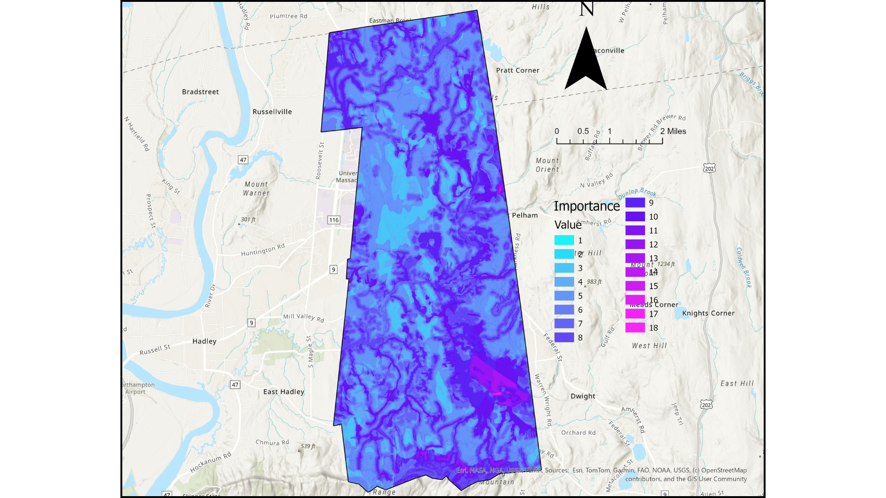
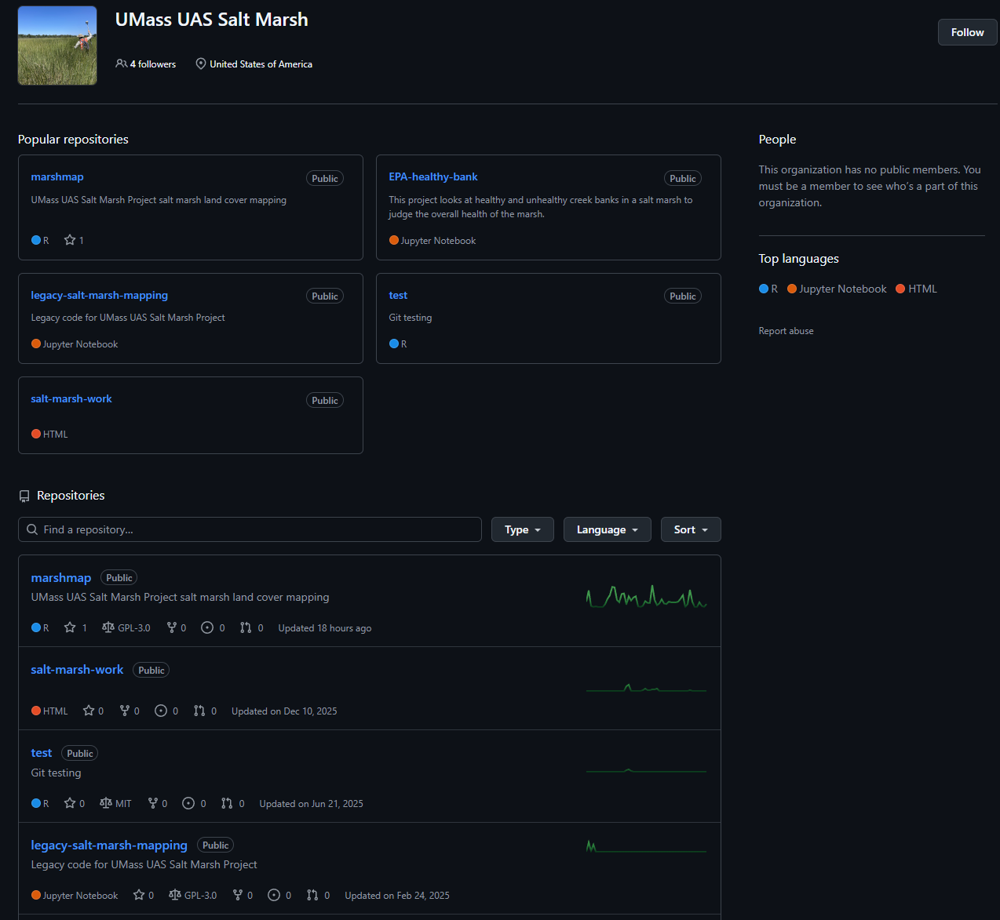
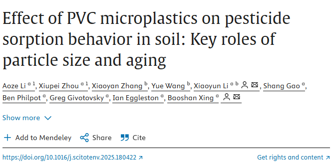

Economics B.A. & Environmental Science B.S. | GIS • R • Excel • Data Analysis
I’m about to graduate, and am looking to build a career in environmental policy, applied economics, and data-driven decision making.
Completed: Fall 2025
Click on the map to see my full GIS poster!
Tools: ArcGIS, MassGIS datasets
Completed: Summer 2025
Click on the image to see the public repositories that I contributed to!
Tools: R Studio, data analysis, QGIS
If you want to see all the scripts I pushed to the repo, click here!Completed: Fall 2024 - Spring 2025
Click on the image to access the full peer-reviewed publication!
Tools: Lab methods, Excel, Sampling
Expected: May 2026
Expected: May 2026